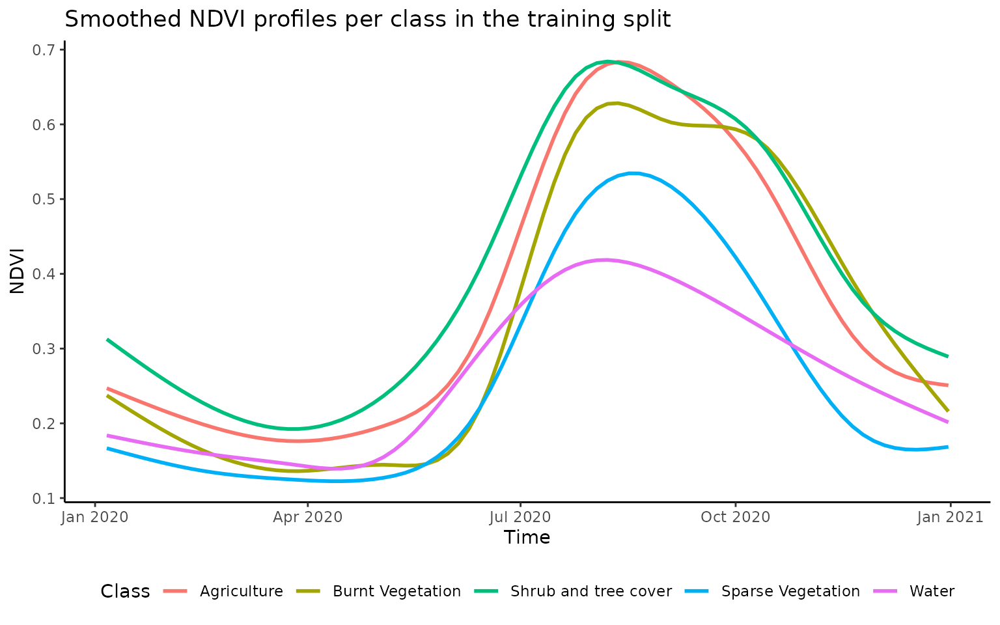

classification.RmdFirst let’s load some packages that we are going to need for the process.
library(mapme.classification)
library(tidyr)
library(ggplot2)
library(stringr)
library(terra)
library(sf)
library(dplyr)
library(magrittr)Here, we assume that a 10-daily NDVI time series spanning the year 2020 processed by the {mapme.vegetation} package is already available. We are using this time-series as a multi-temporal predictor set but the functionality also applies to other possible predictor sets. Note, that in order to save us some trouble with the predict() function when applying the model we change the names of the layers to something creating less confusion (for example in our tests, predictors including an hyphen tend to cause some trouble when actually using the model for predictions).
# read data
files = list.files(system.file("extdata/indices", package = "mapme.classification"), full.names = T)
predictors = rast(files)
predictors = (predictors - 1427) / 10000 # apply scale and offset (only for package data)
names(predictors) = str_replace_all(names(predictors), "-", "\\.")
plot(predictors)In addition to the predictors we will read a polygon object indicating the location of known land uses. We will use this objects to get some samples where we know the class label that can be used during model fit. Note, that these polygons have been digitized on screen.
aoi = st_read(system.file("extdata", "reference.gpkg", package = "mapme.classification"), quiet = T)
aoi$id = 1:nrow(aoi) # give it a unique ID, important for extraction
aoi = st_buffer(aoi, 100)
aoi
#> Simple feature collection with 58 features and 3 fields
#> Geometry type: POLYGON
#> Dimension: XY
#> Bounding box: xmin: 243051.4 ymin: 1467726 xmax: 252508.2 ymax: 1476557
#> Projected CRS: WGS 84 / UTM zone 37N
#> First 10 features:
#> CNAME CID geom id
#> 1 Sparse Vegetation 4 POLYGON ((245389.6 1468778,... 1
#> 2 Sparse Vegetation 4 POLYGON ((245439.2 1468775,... 2
#> 3 Sparse Vegetation 4 POLYGON ((245522.3 1468711,... 3
#> 4 Sparse Vegetation 4 POLYGON ((246505.5 1474859,... 4
#> 5 Sparse Vegetation 4 POLYGON ((246851.3 1473816,... 5
#> 6 Sparse Vegetation 4 POLYGON ((246862.2 1473675,... 6
#> 7 Sparse Vegetation 4 POLYGON ((247003.9 1473023,... 7
#> 8 Sparse Vegetation 4 POLYGON ((247031.8 1472903,... 8
#> 9 Sparse Vegetation 4 POLYGON ((247050.2 1472875,... 9
#> 10 Sparse Vegetation 4 POLYGON ((247050.8 1472834,... 10We see that we have a total number of 58 polygons associated with different classes or labels found in the column CNAME. We can investigate the class distribution with the table() function. In general, the samples are evenly distributed among the classes with agriculture showing the lowest object number with 9 and Burnt vegetation the highest number with 14. In total, we have 5 different land use classes.
table(aoi$CNAME)
#>
#> Agriculture Burnt Vegetation Shrub and tree cover
#> 9 14 11
#> Sparse Vegetation Water
#> 13 11In the next step we are simulating a spatial stratification of the sampling locations. We will split up the entire AOI into 4 quadrants of equal size and include the information in which quadrant the quadrant of a sample lies in the data.frame. This way, later we can split our data set into training and testing equally against our 4 spatial units as well as telling the model to create space-folds to be used during cross-validation. We will take a closer look at what both of these aspects mean later on in this vignette.
h = ceiling(nrow(predictors) / 2)
v = ceiling(ncol(predictors) / 2)
agg = aggregate(predictors[[1]], fact = c(h,v))
agg[] = 1:ncell(agg)
quadrants = as.polygons(agg)
quadrants = st_as_sf(quadrants)
aoi$quad = as.character(paste("Qd", st_within(st_centroid(aoi ), quadrants), sep = "-"))
aoi
#> Simple feature collection with 58 features and 4 fields
#> Geometry type: POLYGON
#> Dimension: XY
#> Bounding box: xmin: 243051.4 ymin: 1467726 xmax: 252508.2 ymax: 1476557
#> Projected CRS: WGS 84 / UTM zone 37N
#> First 10 features:
#> CNAME CID geom id quad
#> 1 Sparse Vegetation 4 POLYGON ((245389.6 1468778,... 1 Qd-3
#> 2 Sparse Vegetation 4 POLYGON ((245439.2 1468775,... 2 Qd-3
#> 3 Sparse Vegetation 4 POLYGON ((245522.3 1468711,... 3 Qd-3
#> 4 Sparse Vegetation 4 POLYGON ((246505.5 1474859,... 4 Qd-1
#> 5 Sparse Vegetation 4 POLYGON ((246851.3 1473816,... 5 Qd-1
#> 6 Sparse Vegetation 4 POLYGON ((246862.2 1473675,... 6 Qd-1
#> 7 Sparse Vegetation 4 POLYGON ((247003.9 1473023,... 7 Qd-1
#> 8 Sparse Vegetation 4 POLYGON ((247031.8 1472903,... 8 Qd-1
#> 9 Sparse Vegetation 4 POLYGON ((247050.2 1472875,... 9 Qd-3
#> 10 Sparse Vegetation 4 POLYGON ((247050.8 1472834,... 10 Qd-3From the output above, we see that each object now is associated with the information in which quadrant it lies. For now, we will use this information to create a training and test split. Here, for us it is important that during testing we test against objects within all locations and that we not exclude a certain location from the test set, e.g. through completly random sampling. Additionally, we would also wish to retain a similar class distribution between the training and test set so that we do not add any biases by differing distributions. Here we can use the train_split() function from the {mapme.classification} package. It works by handing over an sf object together with an column uniquely identifying each object and the response variable. As a default, the function will try to equally distribute the response variable among the training and test data set. If the response is numerical, it can be split into categories using base R’s cut() function via the ... argument. Additionally, a grouping variable can be included to stratify the split by this variable. Parameter p indicates the percentage that should go into the training set. To ensure reproducibility of the split, make sure to explicitly set a seed.
(aoi2 = train_split(
aoi,
idcol = "id",
response = "CNAME",
group = "quad",
p = 0.5,
seed = 32,
verbose = T))
#> Distribution of train set:
#>
#> Qd-1 Qd-2 Qd-3 Qd-4
#> Agriculture 0 2 2 0
#> Burnt Vegetation 2 1 3 1
#> Shrub and tree cover 1 2 1 2
#> Sparse Vegetation 2 0 3 1
#> Water 0 0 2 3
#> 02120212002313201213
#> Distribution of test set:
#>
#> Qd-1 Qd-2 Qd-3 Qd-4
#> Agriculture 1 2 2 0
#> Burnt Vegetation 2 1 3 1
#> Shrub and tree cover 1 1 1 2
#> Sparse Vegetation 3 0 3 1
#> Water 0 0 3 3
#> 12130211002313301213
#> Simple feature collection with 58 features and 5 fields
#> Geometry type: POLYGON
#> Dimension: XY
#> Bounding box: xmin: 243051.4 ymin: 1467726 xmax: 252508.2 ymax: 1476557
#> Projected CRS: WGS 84 / UTM zone 37N
#> First 10 features:
#> CNAME CID geom id quad split
#> 1 Sparse Vegetation 4 POLYGON ((245389.6 1468778,... 1 Qd-3 train
#> 2 Sparse Vegetation 4 POLYGON ((245439.2 1468775,... 2 Qd-3 train
#> 3 Sparse Vegetation 4 POLYGON ((245522.3 1468711,... 3 Qd-3 test
#> 4 Sparse Vegetation 4 POLYGON ((246505.5 1474859,... 4 Qd-1 train
#> 5 Sparse Vegetation 4 POLYGON ((246851.3 1473816,... 5 Qd-1 test
#> 6 Sparse Vegetation 4 POLYGON ((246862.2 1473675,... 6 Qd-1 test
#> 7 Sparse Vegetation 4 POLYGON ((247003.9 1473023,... 7 Qd-1 train
#> 8 Sparse Vegetation 4 POLYGON ((247031.8 1472903,... 8 Qd-1 test
#> 9 Sparse Vegetation 4 POLYGON ((247050.2 1472875,... 9 Qd-3 test
#> 10 Sparse Vegetation 4 POLYGON ((247050.8 1472834,... 10 Qd-3 testIn the verbose mode the function messages the distribution if classes for both the training and test set. We see that the classes are not distributed identically but very similar. The resulting sf object now shows an additional column called split which specifies if a specific observation belongs to the train or test sample.
With this information at hand we can now begin to extract our predictors. In the present case we are extracting all pixels within a polygon and associated it with the respective class label. We can use the extract_traindata() function for this.
traindata = extract_traindata(
aoi2,
predictors,
verbose = T)
#> Coercing sf object to SpatVect.
#> Checking projections.
#> Starting extraction. This might take a while...
#> Joining aoi metadata with extracted values.
traindata$CNAME = as.factor(traindata$CNAME)
head(traindata)
#> CNAME CID id quad split NDVI.2020.01.06 NDVI.2020.01.16
#> 1 Sparse Vegetation 4 1 Qd-3 train 0.2106 0.2019
#> 2 Sparse Vegetation 4 1 Qd-3 train 0.1834 0.1775
#> 3 Sparse Vegetation 4 1 Qd-3 train 0.2177 0.2092
#> 4 Sparse Vegetation 4 1 Qd-3 train 0.1999 0.1998
#> 5 Sparse Vegetation 4 1 Qd-3 train 0.1575 0.1554
#> 6 Sparse Vegetation 4 1 Qd-3 train 0.1960 0.1964
#> NDVI.2020.01.26 NDVI.2020.02.05 NDVI.2020.02.15 NDVI.2020.02.25
#> 1 0.1878 0.1784 0.1769 0.1603
#> 2 0.1694 0.1633 0.1638 0.1503
#> 3 0.1942 0.1817 0.1771 0.1540
#> 4 0.1934 0.1857 0.1823 0.1688
#> 5 0.1483 0.1431 0.1422 0.1316
#> 6 0.1913 0.1866 0.1861 0.1681
#> NDVI.2020.03.06 NDVI.2020.03.16 NDVI.2020.03.26 NDVI.2020.04.05
#> 1 0.1565 0.1599 0.1623 0.1715
#> 2 0.1470 0.1467 0.1418 0.1486
#> 3 0.1465 0.1420 0.1325 0.1392
#> 4 0.1656 0.1610 0.1583 0.1624
#> 5 0.1298 0.1290 0.1281 0.1322
#> 6 0.1659 0.1616 0.1590 0.1672
#> NDVI.2020.04.15 NDVI.2020.04.25 NDVI.2020.05.05 NDVI.2020.05.15
#> 1 0.1802 0.1901 0.1799 0.1660
#> 2 0.1580 0.1550 0.1353 0.1514
#> 3 0.1572 0.1584 0.1521 0.1839
#> 4 0.1718 0.1772 0.1766 0.1655
#> 5 0.1388 0.1427 0.1369 0.1175
#> 6 0.1784 0.1834 0.1782 0.1745
#> NDVI.2020.05.25 NDVI.2020.06.04 NDVI.2020.06.14 NDVI.2020.06.24
#> 1 0.1684 0.1896 0.2510 0.3457
#> 2 0.1896 0.2464 0.3385 0.4467
#> 3 0.2399 0.3123 0.4115 0.5157
#> 4 0.1634 0.1690 0.1915 0.2291
#> 5 0.1188 0.1332 0.1642 0.2119
#> 6 0.1794 0.1954 0.2453 0.3181
#> NDVI.2020.07.04 NDVI.2020.07.14 NDVI.2020.07.24 NDVI.2020.08.03
#> 1 0.4545 0.5868 0.6720 0.7389
#> 2 0.5507 0.6779 0.7334 0.7524
#> 3 0.6113 0.7081 0.7854 0.8114
#> 4 0.2663 0.3105 0.3524 0.3894
#> 5 0.2569 0.3053 0.3426 0.3684
#> 6 0.3969 0.5053 0.5502 0.5855
#> NDVI.2020.08.13 NDVI.2020.08.23 NDVI.2020.09.02 NDVI.2020.09.12
#> 1 0.7620 0.7322 0.6791 0.6145
#> 2 0.7435 0.7411 0.7128 0.6655
#> 3 0.8042 0.8004 0.7892 0.7699
#> 4 0.4131 0.4131 0.4096 0.3954
#> 5 0.3782 0.3651 0.3613 0.3486
#> 6 0.5959 0.5916 0.5766 0.5416
#> NDVI.2020.09.22 NDVI.2020.10.02 NDVI.2020.10.12 NDVI.2020.10.22
#> 1 0.5526 0.4982 0.4494 0.4084
#> 2 0.6100 0.5456 0.4765 0.4142
#> 3 0.7426 0.7072 0.6557 0.5950
#> 4 0.3721 0.3433 0.3023 0.2611
#> 5 0.3284 0.3059 0.2730 0.2385
#> 6 0.5028 0.4619 0.4145 0.3718
#> NDVI.2020.11.01 NDVI.2020.11.11 NDVI.2020.11.21 NDVI.2020.12.01
#> 1 0.3480 0.3145 0.2821 0.2544
#> 2 0.3196 0.2614 0.2258 0.2021
#> 3 0.5336 0.4586 0.3777 0.3078
#> 4 0.2276 0.2087 0.1980 0.1924
#> 5 0.2071 0.1873 0.1789 0.1741
#> 6 0.2897 0.2484 0.2251 0.2118
#> NDVI.2020.12.11 NDVI.2020.12.21 NDVI.2020.12.31
#> 1 0.2315 0.2132 0.1992
#> 2 0.1881 0.1817 0.1807
#> 3 0.2582 0.2380 0.2562
#> 4 0.1903 0.1903 0.1909
#> 5 0.1708 0.1666 0.1593
#> 6 0.2063 0.2066 0.2106As you can see, the attributes from the aoi2 object are retained. However, we now longer have an sf object but rather a simple data.frame. We also see a number of new columns coressponding to the names of our predictor data set. We also see that the value in the column id is repeated several times. This means that for the first object we actually extracted three different pixels that lie within that polygon. This is of course create because we get a higher number of observations (1377 in total), but because these observations actually come from the same object they are not really what statisticians call independent. This is one reason why we conducted the training split before extracting so that we can make sure that no pixels from the same object are included in both, training and test. For now, let’s try to visualize the extracted data and see if we are able to find some differences among the land use classes.
traindata %>%
as_tibble %>%
pivot_longer(6:42, names_to = "predictor", values_to = "value") %>%
mutate(time = as.Date(str_sub(predictor,6,15), format = "%Y.%m.%d")) %>%
ggplot() +
geom_smooth(aes(x=time,y=value,color=CNAME), se = F) +
theme_classic() +
labs(x="Time", y="NDVI",color="Class") +
ggtitle("Smoothed NDVI profiles per class in the training split") +
theme(legend.position = "bottom")
#> `geom_smooth()` using method = 'gam' and formula 'y ~ s(x, bs = "cs")'
From the above plot we an see the different NDVI curves over the year averaged by land cover class. While agriculture and burnt vegetation show a very similar NDVI curve, other classes are clearly distinct. It is this information included in our training sample that we wish the RandomForest model to learn in order to differentiate between land uses.
{mapme.classification} uses the pre-processed training data to map LULC. In the current example, the Random Forest (RF) algorithm is used for this purpose. RF are an ensemble learning method for classification, regression and other tasks, that operate by constructing multiple decision trees during the training stage and outputting the class that is the mode of the classes (classification) or the average prediction (regression) of the individual trees.
We have different options on how we would like the training to happen. First, we will have to decide on a model to be used. Note, that in principal all models supported by the caret package can be specified via the method argument. We will use the RF model based on the randomForest package. It is also a good advise to explicitly state the column names in the traindata object that should be considered as predictors. We also need to tell the model which of the variables is the response variable. It will be automatically deducted based on the datatype whether to conduct a regression or a classification so make sure to properly set the datatype (e.g. character or factor for classification). We also have the possibility to include a variable indicating the spatial and the temporal strata a given observations belongs to. Here we will only specify a spatial variable (the quadrant a observation belongs to) but we could have also taken measurements of a variable at different points in time. During model fit we would like to base our cross-validation on these variables so that we are actually able to measure how well a model performs on a new space-time location. Note, that including a temporal variable in the cross-validation is usually a less common practice during classification but it can be frequently seen with regression problems. The parameter k controls how many folds the cross validation is based on. Please check caret::train() for additional arguments that can be supplied (such as the metric to optimize for). The train_model() function additionally allows us to conduct a forward-future selection based on CAST::ffs. In this mode, during the first round each single predictor will be tested against all other predictors and the best combination will be selected. This is then repeated with all remaining variables until no improvement in the optimization metric is found. This process can be quite computationally expensive because many models might be fit. For this reason we will train the current model without FFS.
output = train_model(
traindata = traindata[traindata$split == "train", ],
predictors = names(predictors),
response = "CNAME",
spacevar = "quad",
k = 5,
ffs = F,
method = "rf",
metric = "Accuracy",
maximize = TRUE,
seed = 32,
verbose = T,
ntree=500)
#> Spatiotemporal CV was selected. Setting trControl to CV with space-time index for folds.
#> FFS was not selected. Training model with all predictors...
#> Loading required package: lattice
#> Model type classification. Returning confusion matrix.
output$model
#> Random Forest
#>
#> 665 samples
#> 37 predictor
#> 5 classes: 'Agriculture', 'Burnt Vegetation', 'Shrub and tree cover', 'Sparse Vegetation', 'Water'
#>
#> No pre-processing
#> Resampling: Cross-Validated (25 fold)
#> Summary of sample sizes: 522, 451, 594, 500, 593
#> Resampling results across tuning parameters:
#>
#> mtry Accuracy Kappa
#> 2 0.3889208 0.227957
#> 19 0.4140827 0.243893
#> 37 0.4064190 0.236892
#>
#> Accuracy was used to select the optimal model using the largest value.
#> The final value used for the model was mtry = 19.The function returns a list object with the model in the first position, a confusion matrix in the second positions and the observed and predicted vectors following. Considering the model output we see above we see that we have an overall accuracy of only about 41%. What is this estimate based on? During model fit, observations from certain quadtrants have been held out of training and the model is then evaluated based on this data. Unfortunatley, we only have a very small amount of training data. Thus in order to get a more reliable estimate of the model fit we should evaluate the model on the hold-out-validation set.
In order to derive a robust indicator of the model’s performance we will use the test set. We can use the eval_test() function. It expects a trained model as input, the data for which to predict the outcome as well as the column name where the observed outcome is stored.
evaluated = eval_test(
output$model,
traindata[traindata$split == "test", ],
response = "CNAME")
evaluated$cnf
#> Confusion Matrix and Statistics
#>
#> Reference
#> Prediction Agriculture Burnt Vegetation Shrub and tree cover
#> Agriculture 66 11 19
#> Burnt Vegetation 23 135 15
#> Shrub and tree cover 14 2 68
#> Sparse Vegetation 10 16 11
#> Water 4 2 4
#> Reference
#> Prediction Sparse Vegetation Water
#> Agriculture 26 5
#> Burnt Vegetation 3 6
#> Shrub and tree cover 4 16
#> Sparse Vegetation 134 21
#> Water 0 97
#>
#> Overall Statistics
#>
#> Accuracy : 0.7022
#> 95% CI : (0.6672, 0.7356)
#> No Information Rate : 0.2346
#> P-Value [Acc > NIR] : < 2.2e-16
#>
#> Kappa : 0.6246
#>
#> Mcnemar's Test P-Value : 5.012e-10
#>
#> Statistics by Class:
#>
#> Class: Agriculture Class: Burnt Vegetation
#> Sensitivity 0.5641 0.8133
#> Specificity 0.8975 0.9139
#> Pos Pred Value 0.5197 0.7418
#> Neg Pred Value 0.9128 0.9415
#> Precision 0.5197 0.7418
#> Recall 0.5641 0.8133
#> F1 0.5410 0.7759
#> Prevalence 0.1643 0.2331
#> Detection Rate 0.0927 0.1896
#> Detection Prevalence 0.1784 0.2556
#> Balanced Accuracy 0.7308 0.8636
#> Class: Shrub and tree cover Class: Sparse Vegetation
#> Sensitivity 0.58120 0.8024
#> Specificity 0.93950 0.8936
#> Pos Pred Value 0.65385 0.6979
#> Neg Pred Value 0.91941 0.9365
#> Precision 0.65385 0.6979
#> Recall 0.58120 0.8024
#> F1 0.61538 0.7465
#> Prevalence 0.16433 0.2346
#> Detection Rate 0.09551 0.1882
#> Detection Prevalence 0.14607 0.2697
#> Balanced Accuracy 0.76035 0.8480
#> Class: Water
#> Sensitivity 0.6690
#> Specificity 0.9824
#> Pos Pred Value 0.9065
#> Neg Pred Value 0.9207
#> Precision 0.9065
#> Recall 0.6690
#> F1 0.7698
#> Prevalence 0.2037
#> Detection Rate 0.1362
#> Detection Prevalence 0.1503
#> Balanced Accuracy 0.8257Considering the held-out test set with the present model we achieve an OA of 70% and a Kappa score of 0.62. There is some severe confusion between agriculture and burnt vegetation reducing the sensitivity of the agricultural class to 75% as well as between water and sparse vegetation. The other classes seem to be better separable. In a next step we might be interested in using the model to create a spatial prediction that we can use for further analyses (e.g. areal statistics) or visualization.
To conduct a spatial prediction we can use the spatial_predict() function that allows us to get a raster including the spatial prediction. Additionally, we can use it to calculate the area of applicability (AOA) of our prediction model. The concept of AOA was introduced by Meyer & Pebesma (2020) and describes the boundaries where a classifier or regression model delivers useful outcomes. These boundaries are set by the available training dataset because we can not expect a model to perform equally well at locations where the predictors deviate substantially from the distribution within the training set. The CAST package is used to calculate the AOA as well as the diversity index (DI) that is the basis for the AOA calculation. Feel free to read more in the CAST documentation. Since both the prediction and AOA calculation can be computationally intensive for large rasters you can specify the number of cores to be used for parallel computation.
(pred_raster = spatial_predict(
predictors = predictors,
model = output$model,
mode = "response",
AOA = T,
ncores = 1))#> class : SpatRaster
#> dimensions : 265, 267, 3 (nrow, ncol, nlyr)
#> resolution : 40, 40 (x, y)
#> extent : 242123, 252803, 1467643, 1478243 (xmin, xmax, ymin, ymax)
#> coord. ref. : WGS 84 / UTM zone 37N (EPSG:32637)
#> source : pred-raster.tif
#> red-grn-blue: 1, 2, 3
#> names : class, DI, AOA
#> min values : Agriculture, 0, 0
#> max values : Water, 0, 1mapme.classification uses confusion matrices and it implements current standards for accuracy assessments and LULC area estimation. More concisely, it uses error matrices to correct bias in the LULC area estimates, was proposed by Yelena Finegold & Antonia Ortmann (2016) and Olofsson et al. (2013). We can use the area_estimation() function to derive an adjusted area estimation taking into account the distribution of the training classes. This method delivers adjusted area estimates and also a confidence range for these estimates for each class.
(areast = area_estimation(pred_raster$class, cnf = evaluated$cnf))
#> class area_org area_adj area_adj.sd
#> 1 Agriculture 11540800 17687601.3564256 2963530.71605651
#> 2 Burnt Vegetation 39755200 39208050.6136067 3124660.51985942
#> 3 Shrub and tree cover 29812800 20764889.8147416 2911194.80031172
#> 4 Sparse Vegetation 21649600 26383012.6458576 2828239.77675223
#> 5 Water 9600000 8314845.56936854 1441750.41080769
#> PA PA.sd UA UA.sd
#> 1 0.368065445427389 0.0686186264007139 0.564102564102564 0.0897794231858626
#> 2 0.824601979404664 0.044525881868898 0.813253012048193 0.0591605608317763
#> 3 0.834442060154656 0.051814393918205 0.581196581196581 0.0893248409070239
#> 4 0.658436379594763 0.0648623219879592 0.802395209580838 0.0602661523761192
#> 5 0.772361784947132 0.117001528384831 0.668965517241379 0.0764701335931089
#> OA OA.sd
#> 1 0.711668488934776 0.0355314755594928
#> 2 <NA> <NA>
#> 3 <NA> <NA>
#> 4 <NA> <NA>
#> 5 <NA> <NA>We see that we have very low Producer’s (PA) and User’s accuracy (UA) for agriculture resulting in a wide range of the adjusted area. For other classes the estimated range is much more narrow.
A common post-processing step especially for visualization can be to filter the classified raster to remove very small patches of one class within another. For this we can use the postclass() function that allows us to apply a zonal statistic in a certain neighborhood size of a pixel. In this example we will return the most frequent class in a 5x5 neighborhood.
(postclass_raster = postclass(
pred_raster$class,
w = 3,
fun = "modal"
))
#> class : SpatRaster
#> dimensions : 265, 267, 1 (nrow, ncol, nlyr)
#> resolution : 40, 40 (x, y)
#> extent : 242123, 252803, 1467643, 1478243 (xmin, xmax, ymin, ymax)
#> coord. ref. : WGS 84 / UTM zone 37N (EPSG:32637)
#> source : memory
#> name : class
#> min value : Agriculture
#> max value : WaterLet’s finally visualize our results. We will plot both the original raster and the post-classification raster. Also we will mark pixels that are considered as outside of the area of applicability explicitly. Finally, we will give a more intuitive color code for each class.
pred_raster$class = mask(pred_raster$class, pred_raster$AOA, maskvalues =0, updatevalue= 5)
levels(pred_raster$class) = c("Agriculture", "Burnt Vegetation", "Shrub and tree cover", "Sparse Vegetation", "Water", "not-applicable")
postclass_raster = mask(postclass_raster, pred_raster$AOA, maskvalues =0, updatevalue= 5)
levels(postclass_raster) = c("Agriculture", "Burnt Vegetation", "Shrub and tree cover", "Sparse Vegetation", "Water", "not-applicable")
vis = c(pred_raster$class, postclass_raster)
names(vis) = c("Original", "Postclass")
plot(vis, col = c("orange", "grey", "green", "darkgreen", "blue", "black"), legend = "topright", plg = list(ncol=3))Olofsson, Pontus, Giles M Foody, Stephen V Stehman, and Curtis E Woodcock. 2013. “Making Better Use of Accuracy Data in Land Change Studies: Estimating Accuracy and Area and Quantifying Uncertainty Using Stratified Estimatio.” Remote Sensing of Environment. 129 (February): 122–31. https://doi.org/10.1016/j.rse.2012.10.031.
Yelena Finegold & Antonia Ortmann. 2016. Map Accuracy Assessment and Area Estimation: A Practical Guide. National Forest Monitoring and Assessment Working Paper 46. Rome, Italy: FAO. http://www.fao.org/documents/card/en/c/e5ea45b8-3fd7-4692-ba29-fae7b140d07e/.